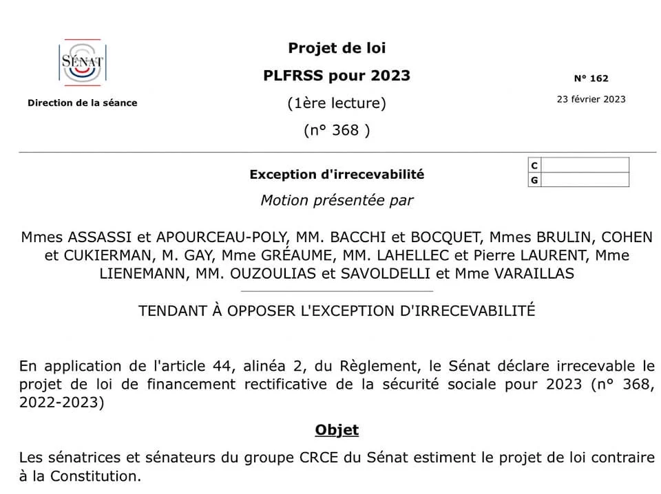

Publication d’archives
Les sénateurs du groupe CRCE (communistes et apparentés) viennent de déposer une motion d’irrecevabilité à…
Date indiquée par Facebook · 25 février 2023
Texte conservé avec la publication
Contexte du dossier
Le 25 février, la fédération relaie le dépôt par les sénateurs CRCE d’une motion d’irrecevabilité contre la réforme, dont ils contestent la constitutionnalité ; cette appréciation parlementaire n’est pas un jugement juridictionnel. À Niort, la NUPES annonce pour le 3 mars, au centre Du Guesclin, une réunion affirmant la possibilité et la nécessité du départ à 60 ans. Une retraite aux flambeaux est signalée le 1er mars devant la permanence du sénateur Philippe Mouiller à Moncoutant, dans une légende mise à jour le 2. Les publications des 6 et 7 mars réaffirment l’unité contre le projet et revendiquent le soutien de l’opinion à son retrait et à la grève. Elles préparent une nouvelle étape de mobilisation.

Sources
Archive rouge · export Facebook · AR-0002-FB-01745
À lire aussi · Appel solennel à l'attention du Président de la République :